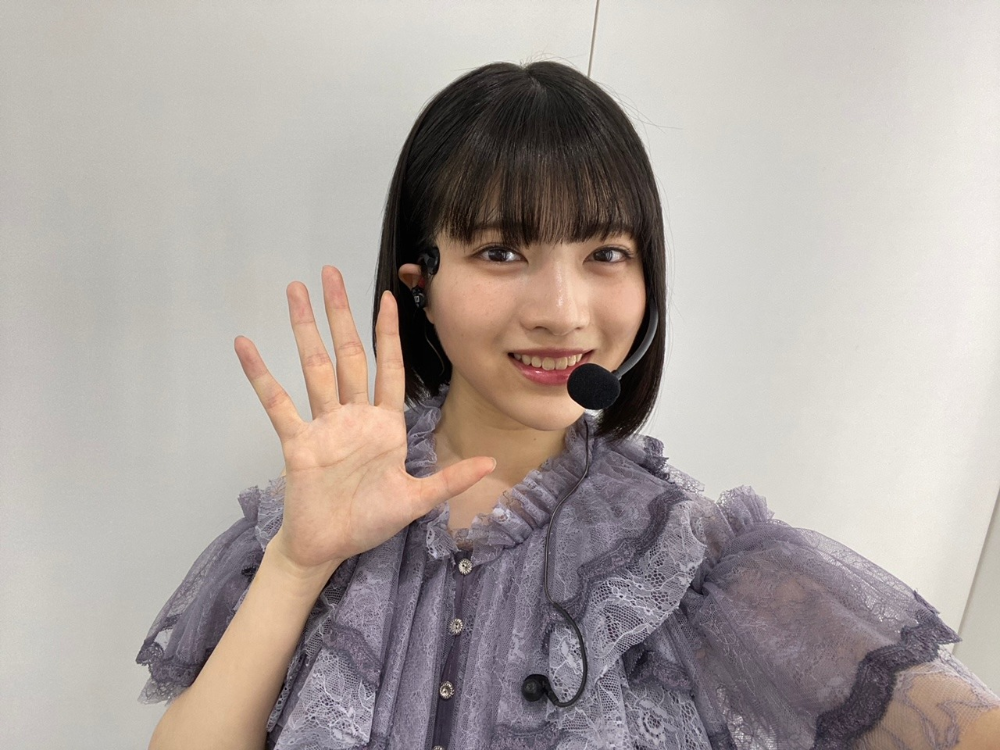
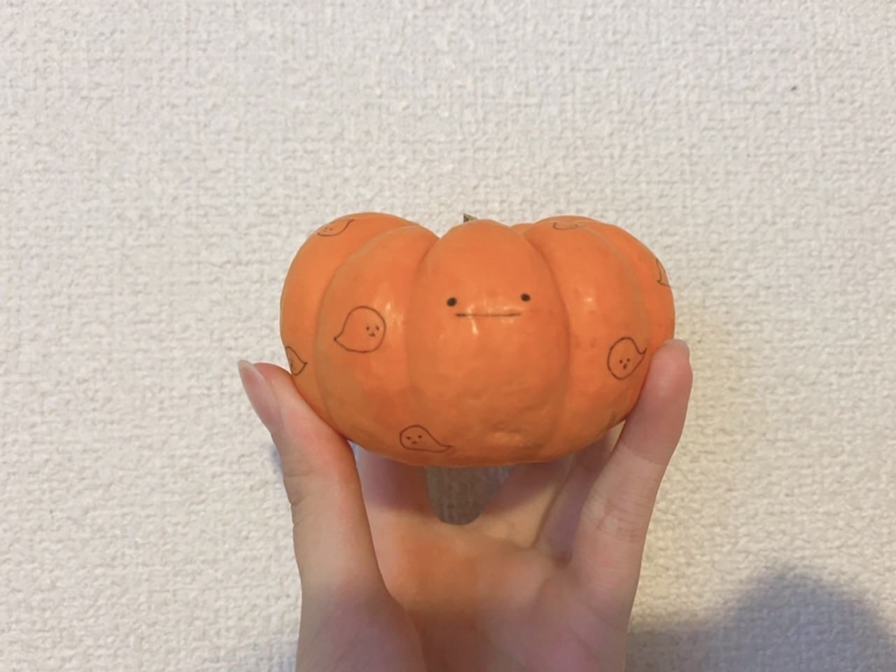
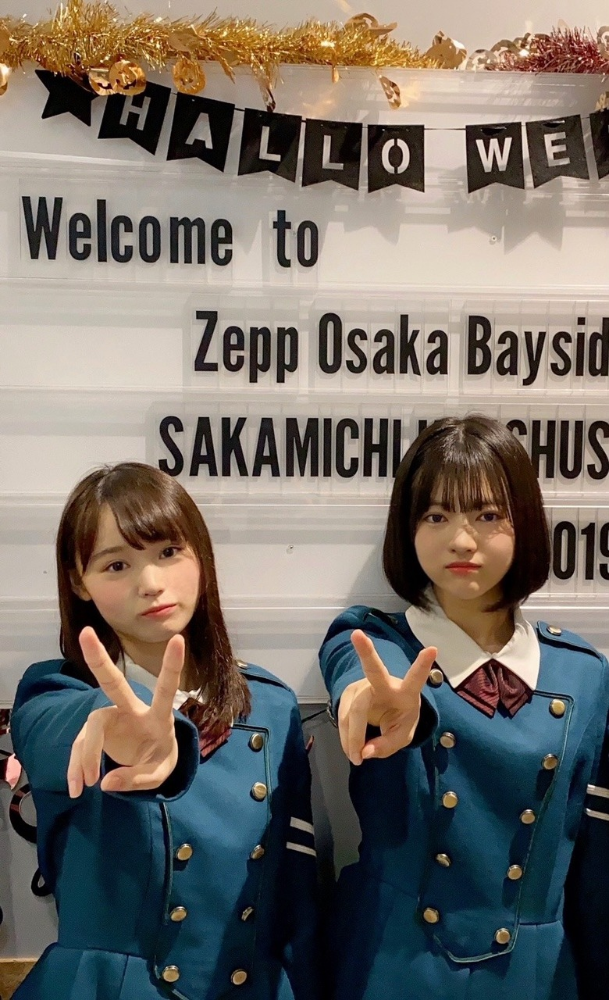

2020/1031Sat皆さん本当にお疲れ様でした！お疲れ様です、林瑠奈です。ハロウィンです！
白石麻衣さん卒業コンサート。
『Mai Shiraishi Graduation Concert ~Always beside you ~』
本当にありがとうございました。
白石麻衣さん。
ご卒業おめでとうございます。
まず、"白石麻衣"さんという字面が大好きで、
もちろん皆さん本当に素敵な名前の方しかいないんですけれども、
わたしが乃木坂46を知るきっかけ
わたしが乃木坂46を好きになったきっかけ
わたしが乃木坂46を友達に薦めたとき
どんな場面でも白石麻衣さんがいらっしゃったなと。
単純に目にする機会が多かったからとか、そういうことではなくて、
何故か"白石さん"よりも"白石麻衣さん"の方がしっくりきます。
何故か"白石さん"よりも"白石麻衣さん"の方がしっくりきます。
アイドルの枠を超えてご活躍なさるお姿も
どんどん磨きがかかるその美しさも
沢山の愛に溢れた内輪で見せる愛嬌のあるお姿も
その全てが、
見ている人たちの心に響いて、生きる希望を与えてくれるのだと、
愛を与えてくれるのだと、
関わらさせていただいた時間は少なかったですが、
その限られたご一緒できる時間で、沢山感じさせていただきました。
初めて先輩方とご一緒するライブ。
リハーサルのときからわたしは緊張し過ぎて、
もはや『緊張』そのものになっていました。
ゲネプロが始まる前、
なおと2人でいたときに白石麻衣さんとすれ違って、
『ご一緒させていただく歌割りのところで、目を合わせてもいいですか？』
と聞くと
「そうだよね！この後のときもやろうよ！」
と本当にお優しく言ってくださって
わたしの心の中は愛の許容量を超えてしまい
愛がぼろぼろと溢れました。
ライブが終わった後、にメンバー全員に向けて言ってくださった、
『これからの乃木坂が楽しみだし、
きっともっともっと大きくなっていくんじゃないかなって思ってます。』
そうなって欲しいとわたしも強く思います。
矮小な自分を成長させてくれた乃木坂46に
少しでも力を注げるよう精進していきます。
白石麻衣さん。
約9年間、3357日。
本当にお疲れ様でした。
今までもこれからも、ずっと大好きです。
一瞬に撮ってくださった写真は宝物にします。

Photo by なお
...........................................................................
本日もお疲れ様です。
乃木坂46、4期生の林瑠奈です。
神奈川県出身高校2年生17歳
華咲くセブンのティーンの林瑠奈です。
負けるなしょげるな林瑠奈、今日も1日頑張るな
(ピンポーン)
38周目となりました、ブログリレー。
今回、初めて先輩方とご一緒させていただいたライブということで沢山思い出があります。
ですが、ここで全て話し切ってしまうのは勿体ない気がするので徐々に話していけたらなと。
写真も色々と撮ったのでまた載せますね。

くろみちゃんの携帯を貸してもらって撮りました。
画質が良いですね

持参していた生写真にサインとメッセージを書いていただきました。
去年の手帳には松村さんの生写真を挟んでいたのですが、今年はこのお二方を挟もうと思います。
ずっとお話ししたいと思っていたりりあさんです！
嬉しいです！
このときのお話も次回します！！
...........................................................................
「ブログのネタになるかな、、」と気を利かせた祖母が送ってくれました。

一緒に撮ろうか迷ったのですが、1年の中でこの方が主役になれるのって今日だけなので、ソロで写っていただきました。
顔を描くべきかなと思ったので、ちゃんと描きましたよ。
かぼちゃん。
...........................................................................
さて亡霊になっている皆さん。
今日は何の日ですか。
前述してある通りハロウィーンなのですが、では1年前の今日は何の日でしょう。
はい、どどーん

無表情ピース
ちょうど1年前の今日の写真です。
どろちゃんです。
研修生ツアー大阪2日目は、『サイレントマジョリティー』から始まりましたね。
『誰よりも高く跳べ！』での音響トラブル、めっちゃ懐かしいです。
15人と会場の皆さんで歌って乗り切ったのが、ツアーでの1番の思い出かなぁ。
後ろのモニターに流れる歌詞と、アカペラのスピードが全くズレていなかったとスタッフさんから聞いて、凄く嬉しかったのを覚えています。
大切でかけがえのない想い出。
あの頃から少しは成長できましたかね、わたし
...........................................................................
明日はミュウちゃんです。
みゆちゃんお疲れ様〜。
アディオス！！！！！！！！！！
かしこ
2020/10/31 16:30
コメント(171)
10/28 、、、
私は卒業コンサートの配信中はバイトをしてました…。(かなり悲しい。)(慰めてくださ…)
あ！！わ
わわ！！サイン！直筆サイン！
直筆サインといえば、林瑠奈さん！！！！
なんと私、、！
雑誌のプレゼントで、、、、、！
林瑠奈ちゃんの直筆サイン入りチェキ当てたんです！！！
直接見せたい…。。。。いつまでも待ってます。
サイマジョ衣装のるなぴいつ見ても似合ってるなあ。
瑠奈ちゃん大好きです。あでぃおす、！
私は卒業コンサートの配信中はバイトをしてました…。(かなり悲しい。)(慰めてくださ…)
あ！！わ
わわ！！サイン！直筆サイン！
直筆サインといえば、林瑠奈さん！！！！
なんと私、、！
雑誌のプレゼントで、、、、、！
林瑠奈ちゃんの直筆サイン入りチェキ当てたんです！！！
直接見せたい…。。。。いつまでも待ってます。
サイマジョ衣装のるなぴいつ見ても似合ってるなあ。
瑠奈ちゃん大好きです。あでぃおす、！
こんばんは～(^-^)
卒コンお疲れ様でした～(^-^ゞ
のぎおびもお疲れ様でした～(^-^ゞ
研修生ライブの音響トラブル懐かしい(*^^*)
卒コンお疲れ様でした～(^-^ゞ
のぎおびもお疲れ様でした～(^-^ゞ
研修生ライブの音響トラブル懐かしい(*^^*)
るなぴお疲れ様です！
まいやんも遂に卒業されましたネ。
やはりメンバーの卒業というものは、いつ経験しても寂しく悲しいですネ。
運命とは、どうしてこんなにも切なくできているんだろうと思う。
人が幸せになりたいと願う時、どうして誰かが悲しまなければならないんだろうと。
でもその悲しみが人を強くするのかなって。
優しさに溢れ、みんなから愛され、憧れや理想の存在だったまいやんが居なくなったって、みんなはちゃんとやれる。いやっ、彼女が居ない分、強くなろうとする。
成長していく乃木坂46に頼れる後輩ができ、期待の後輩が入り、これからをみんなになら任せられる。
だからさらに高い夢に向かって旅立ち、思いきって挑戦できたのだと思います(^^)
愛する人への一番の恩返しは、成長した自分を見せることですからネ！
るなぴ達なら大丈夫。
あのときのあの言葉が自分の弱さを吹き飛ばして、そして受け取った確かなものがあると思う。
それをこれから繋げていくんですヨ(^^)
のぎおび観ましたヨ！
いやっホント、日に日に可愛くなっていくし、おしゃべりも上手くて、終わんないでほしいと思いました！
無性に回鍋肉が食べたくなりました(^^)
纏まりのない読みにくく内容のないコメントで申し訳ないです…
いつも応援してます！
るなちゃん
のぎおび観たよ
毎回見て思ってたけど
喋り上手だよ
るなちゃんには是非ラジオのアシスタントを経て
パーソナリティになって欲しい
上手だよ
ワードセンスもいいし、話の間もいい
もう少しだけ声が大きかったら
言う事なしだと思うよ
私は絶対に向いていると思うよ
のぎおび観たよ
毎回見て思ってたけど
喋り上手だよ
るなちゃんには是非ラジオのアシスタントを経て
パーソナリティになって欲しい
上手だよ
ワードセンスもいいし、話の間もいい
もう少しだけ声が大きかったら
言う事なしだと思うよ
私は絶対に向いていると思うよ
今回ののぎおび裏話てんこ盛りでめっちゃおもれーの、ありがてーのでサンキューで〜す
週の初めから〇〇シンデレラ級美少女のここでしか聞けない的裏話マシンガントークてマジ最高かよだし、最後の謎の回鍋肉ゴリ推しの件もおもろかったわ〜
レイちゃんの他の同期メンに対しても熱い意外な一面（けど、まあ確か生徒会長で卒業式で答辞とか読んでんだもんな…）の裏話も良かったで〜
で、乃木坂ちゃんの先輩との絡み、乃木坂ちゃんの同期ん家行って乃木坂ちゃんの作る手料理口にできるなんて前世で世界でも救ったんかってぐらいめちゃめちゃラッキーやんかー
週の初めから〇〇シンデレラ級美少女のここでしか聞けない的裏話マシンガントークてマジ最高かよだし、最後の謎の回鍋肉ゴリ推しの件もおもろかったわ〜
レイちゃんの他の同期メンに対しても熱い意外な一面（けど、まあ確か生徒会長で卒業式で答辞とか読んでんだもんな…）の裏話も良かったで〜
で、乃木坂ちゃんの先輩との絡み、乃木坂ちゃんの同期ん家行って乃木坂ちゃんの作る手料理口にできるなんて前世で世界でも救ったんかってぐらいめちゃめちゃラッキーやんかー
これからの乃木坂をみんなでがんばるな！！
るなぴ、ブログ更新ありがとう！
まいやんの卒業、さびしくなります。
ライブや個握での思い出、宝物です。
お身体に気をつけて頑張って下さい。
まいやんの卒業、さびしくなります。
ライブや個握での思い出、宝物です。
お身体に気をつけて頑張って下さい。
おはよう
卒業コンサートお疲れさまでした
おかげで最高の卒業セレモニーを
大好きなまいやんにプレゼントすることが
できたのではないかと思います
まいやん、卒業しちゃったね...
お見立て会の頃から、
乃木坂を応援してきて約9年間
本当に本当にいろんなことがありました
それは乃木坂メンバー内でのこともあるし、
自分が乃木坂を通してファン活動をしていく中でも様々な出来事や出会いがありました
長かった...？短かった...？
自分でもよくわかりません
乃木坂でまいやんを見つけてから
本当に毎日が楽しくて、
夢中で乃木坂を応援してきました
自分の青春はまいやんと共にありました
今更、まいやんの魅力を語るつもりは
ありませんが、乃木坂に一つの色をつけて
くれたことは間違いないと思ってます
まいやんが卒業したら...
自分も乃木坂ファンを卒業するつもりでした
でも、もうちょっと見ていたい
自分の中でいつの間にかそう思えるグループ
になっていました
まいやんがいなくなった乃木坂
でも、しっかりとその遺伝子は受け継がれてます
もう少し応援してもいいですか？
卒業コンサートお疲れさまでした
おかげで最高の卒業セレモニーを
大好きなまいやんにプレゼントすることが
できたのではないかと思います
まいやん、卒業しちゃったね...
お見立て会の頃から、
乃木坂を応援してきて約9年間
本当に本当にいろんなことがありました
それは乃木坂メンバー内でのこともあるし、
自分が乃木坂を通してファン活動をしていく中でも様々な出来事や出会いがありました
長かった...？短かった...？
自分でもよくわかりません
乃木坂でまいやんを見つけてから
本当に毎日が楽しくて、
夢中で乃木坂を応援してきました
自分の青春はまいやんと共にありました
今更、まいやんの魅力を語るつもりは
ありませんが、乃木坂に一つの色をつけて
くれたことは間違いないと思ってます
まいやんが卒業したら...
自分も乃木坂ファンを卒業するつもりでした
でも、もうちょっと見ていたい
自分の中でいつの間にかそう思えるグループ
になっていました
まいやんがいなくなった乃木坂
でも、しっかりとその遺伝子は受け継がれてます
もう少し応援してもいいですか？
クリスマスですね～♪
TVではクリスマスのCMが流れたり
街はイルミネーションで彩られたり
泣きそうですっ♪
メリークリスマスミスターローレンス
というか
メリークリスマスミスターロンリネス
です泣きそうですっ♪
冬眠しようかなぁ～♪
でも誰も起こしてくれなさ
そうなんだよなぁきそうですっ♪


TVではクリスマスのCMが流れたり
街はイルミネーションで彩られたり
泣きそうですっ♪
メリークリスマスミスターローレンス
というか
メリークリスマスミスターロンリネス
です泣きそうですっ♪
冬眠しようかなぁ～♪
でも誰も起こしてくれなさ
そうなんだよなぁきそうですっ♪
昨日のSHOWROOM配信見たよ〜
夜勤明けに回鍋肉の素買ってきて作って食べてるよ笑
めちゃくちゃ美味しい！
るなぴのホットケーキが食べたい！
夜勤明けに回鍋肉の素買ってきて作って食べてるよ笑
めちゃくちゃ美味しい！
るなぴのホットケーキが食べたい！
こんにちは、はじめまして。
るなちゃんのブログには初めて書きます。ちょっと緊張。笑
すごく個性的で、スタイルビジュアルが良くて、人間性が素晴らしい子なんだろうなって思ってました。一個下だなんて信じられない。笑
私はりりあちゃんファンなんですが、りりあちゃんのことを好きでいてくれてとても嬉しい。ありがとう。りりあちゃん、私が見たり聞いたりしてる分では、自分からめちゃくちゃグイグイいけるタイプではないと思うから、るなちゃんに慕ってもらえてすごい嬉しいと思う。これからもよろしくお願いしますm(__)m
るなちゃん、どうしたら自分がより良くなるかとか(自己プロデュース)周りのこととか、すごく考えてる人だと思う。簡単にいうと努力家。私はそういう子大好きです。ストレス溜まることもあると思うけど、乃木坂ちゃん達を見て癒されてください。笑
応援してます。
るなちゃんのブログには初めて書きます。ちょっと緊張。笑
すごく個性的で、スタイルビジュアルが良くて、人間性が素晴らしい子なんだろうなって思ってました。一個下だなんて信じられない。笑
私はりりあちゃんファンなんですが、りりあちゃんのことを好きでいてくれてとても嬉しい。ありがとう。りりあちゃん、私が見たり聞いたりしてる分では、自分からめちゃくちゃグイグイいけるタイプではないと思うから、るなちゃんに慕ってもらえてすごい嬉しいと思う。これからもよろしくお願いしますm(__)m
るなちゃん、どうしたら自分がより良くなるかとか(自己プロデュース)周りのこととか、すごく考えてる人だと思う。簡単にいうと努力家。私はそういう子大好きです。ストレス溜まることもあると思うけど、乃木坂ちゃん達を見て癒されてください。笑
応援してます。
おはようございます瑠奈様(_ _)
初めましての投稿となり大変恐縮ではございますが、失礼を承知のうえでご報告致します(_ _)
瑠奈様、昨日の夕食は瑠奈様が仰せのままに回鍋肉をいただきました(_ _)
たかが回鍋肉もされど回鍋肉、探しに探し小雨が降る中自転車で走り回ること遂に、６店舗目にしてなんとか回鍋肉を手中に納め、しかしながら帰路に着きそれをいただくも…ぐぬぬ、、、(>_<)！！！ハッ…！バカな！！そんなバカな！！！何故旨くない！？どうやら回鍋肉だからと、青椒肉絲程ではなくとも旨くて当然であるとの考えが甘かったようです(苦笑)此度の回鍋肉は『回鍋肉事件』と称したとして、全く違和感を覚えない程のハズレを引いてしまったと。後にも先にもこれ程までに不味い回鍋肉に出会うことは決してないであろう…そんな一品でございました(_ _)
ですがそれでも完食したことで、瑠奈様がおっしゃった『国外追放』だけは免れたかと存じます(_ _)
新4期生の皆さんがご加入されてからまだ間もないことから何も存じ上げておらず、その為ハッキリと申し上げることは出来兼ねますが…それでも瑠奈様の言葉遣いに話し方からは真面目で素敵に且つ、とても素晴らしいお人柄にあることが窺えるこの頃です(_ _)
わたくしめ如きが大変恐れ多いのですが、新4期生の皆さんの中でも瑠奈様には特に注目、そして期待を致しておりますことをお伝えして、此度のご挨拶とさせていただきます(_ _)
ご多忙なところ貴重なお時間を割ながら、長文乱文の拙い文章に最後まで目を通してくださいましてありがとうございました(_ _)
それではこれで失礼します(_ _)
初めましての投稿となり大変恐縮ではございますが、失礼を承知のうえでご報告致します(_ _)
瑠奈様、昨日の夕食は瑠奈様が仰せのままに回鍋肉をいただきました(_ _)
たかが回鍋肉もされど回鍋肉、探しに探し小雨が降る中自転車で走り回ること遂に、６店舗目にしてなんとか回鍋肉を手中に納め、しかしながら帰路に着きそれをいただくも…ぐぬぬ、、、(>_<)！！！ハッ…！バカな！！そんなバカな！！！何故旨くない！？どうやら回鍋肉だからと、青椒肉絲程ではなくとも旨くて当然であるとの考えが甘かったようです(苦笑)此度の回鍋肉は『回鍋肉事件』と称したとして、全く違和感を覚えない程のハズレを引いてしまったと。後にも先にもこれ程までに不味い回鍋肉に出会うことは決してないであろう…そんな一品でございました(_ _)
ですがそれでも完食したことで、瑠奈様がおっしゃった『国外追放』だけは免れたかと存じます(_ _)
新4期生の皆さんがご加入されてからまだ間もないことから何も存じ上げておらず、その為ハッキリと申し上げることは出来兼ねますが…それでも瑠奈様の言葉遣いに話し方からは真面目で素敵に且つ、とても素晴らしいお人柄にあることが窺えるこの頃です(_ _)
わたくしめ如きが大変恐れ多いのですが、新4期生の皆さんの中でも瑠奈様には特に注目、そして期待を致しておりますことをお伝えして、此度のご挨拶とさせていただきます(_ _)
ご多忙なところ貴重なお時間を割ながら、長文乱文の拙い文章に最後まで目を通してくださいましてありがとうございました(_ _)
それではこれで失礼します(_ _)
卒業コンサートお疲れ様☺︎
白石麻衣さんの横に並ぶはやしを見た時、
わたしはすごく嬉しくて感動しました。
ずっと見たかった景色でした。
わたしも、これからの乃木坂をとても楽しみにしている
1人です。はやしのご成長ご活躍とってもとっても
楽しみです
はやしの卒業の日までオタクやめられないな〜
最後の保護色の時高校生組の林が見られなかったのは
すごく寂しかったけど、生写真で卒コンT姿見るのが
とっても楽しみです( ◜௰◝ ）
【質問】
・はやしはハロウィン何かしましたか？
わたしは、はやしがハロウィンのグッズで着てた
ゾンビメイドの服を着たよ☺︎
・生写真の撮影で推しと同じ衣装だと嬉しい？☺︎
・乃木坂に入ってからも生写真やグッズ買ってるの〜？？
白石麻衣さんの横に並ぶはやしを見た時、
わたしはすごく嬉しくて感動しました。
ずっと見たかった景色でした。
わたしも、これからの乃木坂をとても楽しみにしている
1人です。はやしのご成長ご活躍とってもとっても
楽しみです
はやしの卒業の日までオタクやめられないな〜
最後の保護色の時高校生組の林が見られなかったのは
すごく寂しかったけど、生写真で卒コンT姿見るのが
とっても楽しみです( ◜௰◝ ）
【質問】
・はやしはハロウィン何かしましたか？
わたしは、はやしがハロウィンのグッズで着てた
ゾンビメイドの服を着たよ☺︎
・生写真の撮影で推しと同じ衣装だと嬉しい？☺︎
・乃木坂に入ってからも生写真やグッズ買ってるの〜？？
るなぴっぴ！！
久しぶりにコメントで、緊張してます。
コメントできていない間も、いつも、いつでもブログ読んで元気貰ってます(*´-`)
“るなぴっぴの笑顔byくろみちゃん携帯”
最高画質の瑠奈ちゃんの笑顔は画質に負けないほど最高で、
もう最高としか言いようがなかったです（語彙力はマリアナ海溝に置いてきました）
白石さんの卒業は、大きな変化だと思います。
瑠奈ちゃんが憧れた乃木坂。
瑠奈ちゃんが憧れた白石さん。
白石さんは居なくなったけれど、白石さんが残してくださったことはとても沢山あるんだなぁと実感しました。
これからの瑠奈ちゃん、これからの乃木坂46が楽しみで仕方がありません。（お前誰だよ）
アホみたいな長文失礼しました。
愛が溢れすぎて長文になってしまいました、てへっ///
（最近てへってないですよね、寂しいです）
最後にひとつ質問を残しておきます（需要どこ行った）
Q. 瑠奈ちゃんは運動が得意ですか？また、なんの競技が好きですか？
アディオス！！！！おでぃおす！！！
久しぶりにコメントで、緊張してます。
コメントできていない間も、いつも、いつでもブログ読んで元気貰ってます(*´-`)
“るなぴっぴの笑顔byくろみちゃん携帯”
最高画質の瑠奈ちゃんの笑顔は画質に負けないほど最高で、
もう最高としか言いようがなかったです（語彙力はマリアナ海溝に置いてきました）
白石さんの卒業は、大きな変化だと思います。
瑠奈ちゃんが憧れた乃木坂。
瑠奈ちゃんが憧れた白石さん。
白石さんは居なくなったけれど、白石さんが残してくださったことはとても沢山あるんだなぁと実感しました。
これからの瑠奈ちゃん、これからの乃木坂46が楽しみで仕方がありません。（お前誰だよ）
アホみたいな長文失礼しました。
愛が溢れすぎて長文になってしまいました、てへっ///
（最近てへってないですよね、寂しいです）
最後にひとつ質問を残しておきます（需要どこ行った）
Q. 瑠奈ちゃんは運動が得意ですか？また、なんの競技が好きですか？
アディオス！！！！おでぃおす！！！
白石麻衣卒業ライブ、観させてもらいました。
本来東京ドーム開催だったものが、コロナ禍のために配信ライブになってしまったけど、より多くのファンがリアルタイムに観れたことはそれはそれで良かったと思う。
まぁトラブルで開始が遅れたのはちょっと痛かったけどね。高校生メンバーは最後まで居れなくなっちゃったもんね。
配信ライブならではの演出、プロジェクションマッピングとかを使ったのかな？
とてもよかったし、事前に録音したコールを入れたりして観客がいるように見せるのはリアルなライブのように感じられてよかった。でも「逃げ水」のサビ前の「月の光」のとこはライブだとファンがほぼ自分の推しメンを叫んでるだけで「動物園」って言われてる(笑)んだけど、今回はライブで初めて静かな「月の光」が聴けたなぁ(笑)
まいやんの卒業ライブだけど、2〜4期の代表曲をまいやんがいっしょに歌ったりして、なんか乃木坂46の転換期を表しているかのようで、最後はしみじみとしちゃったな。
でも、これからの乃木坂46も楽しみにしてるよ。
本来東京ドーム開催だったものが、コロナ禍のために配信ライブになってしまったけど、より多くのファンがリアルタイムに観れたことはそれはそれで良かったと思う。
まぁトラブルで開始が遅れたのはちょっと痛かったけどね。高校生メンバーは最後まで居れなくなっちゃったもんね。
配信ライブならではの演出、プロジェクションマッピングとかを使ったのかな？
とてもよかったし、事前に録音したコールを入れたりして観客がいるように見せるのはリアルなライブのように感じられてよかった。でも「逃げ水」のサビ前の「月の光」のとこはライブだとファンがほぼ自分の推しメンを叫んでるだけで「動物園」って言われてる(笑)んだけど、今回はライブで初めて静かな「月の光」が聴けたなぁ(笑)
まいやんの卒業ライブだけど、2〜4期の代表曲をまいやんがいっしょに歌ったりして、なんか乃木坂46の転換期を表しているかのようで、最後はしみじみとしちゃったな。
でも、これからの乃木坂46も楽しみにしてるよ。
昨日のSHOWROOM配信見たよ〜
夜勤明けに回鍋肉の素買ってきて作って食べてるよ笑
めちゃくちゃ美味しい！
るなぴのホットケーキが食べたい！
夜勤明けに回鍋肉の素買ってきて作って食べてるよ笑
めちゃくちゃ美味しい！
るなぴのホットケーキが食べたい！
瑠奈ちゃんこんばんは！
今日ののぎおびを担当してた渡辺みり愛さんが
のぎおび選手権で書いてた五十音の字が丁寧って褒めてたよ！
けれど瑠奈ちゃんより早いタイムになっちゃったから
惜しくも優勝は逃しちゃったね…
また今度優勝を狙っていきましょう！
またね！
今日ののぎおびを担当してた渡辺みり愛さんが
のぎおび選手権で書いてた五十音の字が丁寧って褒めてたよ！
けれど瑠奈ちゃんより早いタイムになっちゃったから
惜しくも優勝は逃しちゃったね…
また今度優勝を狙っていきましょう！
またね！
まだ亡霊にはなっていませんよぉ～…
ピッチピチの生き霊ですよぉ～…
現世からアディオスするまで
もうちょっと時間がかかり
そうですかすこすこすこ

ピッチピチの生き霊ですよぉ～…
現世からアディオスするまで
もうちょっと時間がかかり
そうですかすこすこすこ
感動です
白石さんへのその一歩ステキですね！
コメントする

PROFILE
新4期生リレー
202104
| SUN | MON | TUE | WED | THU | FRI | SAT |
|---|---|---|---|---|---|---|
| 1 | 2 | 3 | ||||
| 4 | 5 | 6 | 7 | 8 | 9 | 10 |
| 11 | 12 | 13 | 14 | 15 | 16 | 17 |
| 18 | 19 | 20 | 21 | 22 | 23 | 24 |
| 25 | 26 | 27 | 28 | 29 | 30 | |

このブログ2度目のコメントです。
ブログにも写真がアップされてるけど、ちょうど1年前は研修生ツアー観に行ってたのを思い出して。
あの時でもアクシデントを乗り越えてやりきった当時の15人はすごいなと思ったけど、あの経験が今回の卒業コンサートに少しでも活きていたら、あの時の観客の一員として誇らしいことはないなと思ってます。